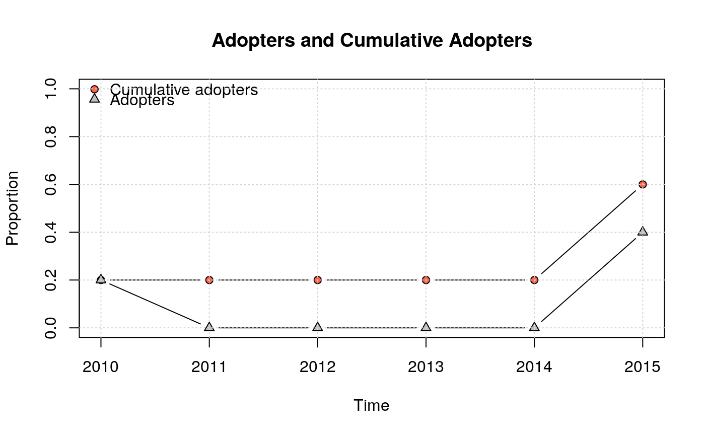

Visualize adopters and cumulative adopters
plot_adopters(obj, freq = FALSE, what = c("adopt", "cumadopt"), add = FALSE, include.legend = TRUE, include.grid = TRUE, pch = c(21, 24), type = c("b", "b"), ylim = if (!freq) c(0, 1) else NULL, lty = c(1, 1), col = c("black", "black"), bg = c("tomato", "gray"), xlab = "Time", ylab = ifelse(freq, "Frequency", "Proportion"), main = "Adopters and Cumulative Adopters", ...)
Arguments
| obj | Either a diffnet object or a cumulative a doption matrix. |
|---|---|
| freq | Logical scalar. When TRUE frequencies are plotted instead of proportions. |
| what | Character vector of length 2. What to plot. |
| add | Logical scalar. When TRUE lines and dots are added to the current graph. |
| include.legend | Logical scalar. When TRUE a legend of the graph is plotted. |
| include.grid | Logical scalar. When TRUE, the grid of the graph is drawn |
| pch | Integer vector of length 2. See |
| type | Character vector of length 2. See |
| ylim | Numeric vector of length 2. Sets the plotting limit for the y-axis. |
| lty | Numeric vector of length 2. See |
| col | Character vector of length 2. See |
| bg | Character vector of length 2. See |
| xlab | Character scalar. Name of the x-axis. |
| ylab | Character scalar. Name of the y-axis. |
| main | Character scalar. Title of the plot |
| ... | Further arguments passed to |
Value
A matrix as described in cumulative_adopt_count.
See also
Other visualizations: dgr,
diffusionMap, drawColorKey,
grid_distribution,
hazard_rate, plot_diffnet2,
plot_diffnet,
plot_infectsuscep,
plot_threshold,
rescale_vertex_igraph
Examples
# Generating a random diffnet ----------------------------------------------- set.seed(821) diffnet <- rdiffnet(100, 5, seed.graph="small-world", seed.nodes="central") plot_adopters(diffnet)# Alternatively, we can use a TOA Matrix toa <- sample(c(NA, 2010L,2015L), 20, TRUE) mat <- toa_mat(toa) plot_adopters(mat$cumadopt)